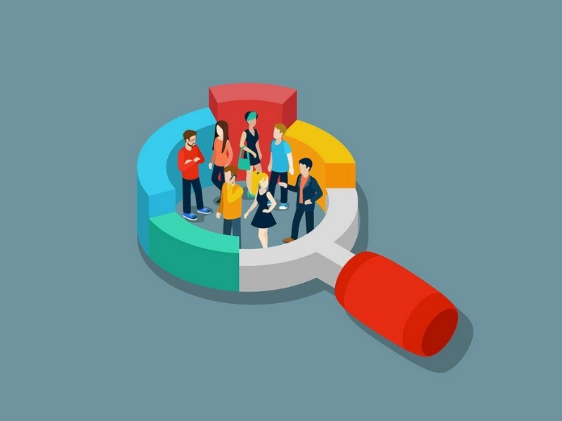

Explicação do problema
Os oceanos, representando mais de 70% da superfície terrestre, enfrentam uma séria ameaça devido à crescente poluição. Relatórios da Organização das Nações Unidas (ONU) indicam que a cada minuto, quantidades substanciais de resíduos, incluindo plásticos, metais pesados e outros poluentes, são despejadas nas águas oceânicas, resultando em uma deterioração alarmante da qualidade da água e graves consequências para a vida marinha.
Essa descarga contínua e massiva de resíduos representa uma ameaça significativa ao equilíbrio ecológico dos oceanos e à sua sustentabilidade, exigindo a implementação urgente de medidas para mitigar esses impactos devastadores.
Tecnologia
Estamos desenvolvendo uma tecnologia inovadora: uma ferramenta que permite ao público visualizar em tempo real a quantidade de resíduos sendo despejados nos oceanos.
Por meio de um contador digital, nosso objetivo é destacar a extensão dos impactos ambientais e sua repercussão direta em nossas vidas. Ao correlacionar essa quantidade de lixo a algo familiar, como o número de caminhões de lixo, buscamos tornar o problema mais tangível e urgente para a conscientização pública.
Principais Objetivos
Por meio de uma representação visual clara, almejamos tornar a questão da poluição oceânica mais tangível e urgente para o público. Ao testemunhar a quantidade de resíduos sendo despejados nos oceanos a cada minuto, as pessoas podem compreender melhor a magnitude do problema.
Ao contemplar a enorme quantidade de resíduos lançados nos oceanos, aspiramos despertar uma consciência ecológica profunda, catalisando mudanças significativas nas atitudes e comportamentos das pessoas em relação à poluição marinha.
Com a redução da quantidade de resíduos despejados nos oceanos e o aumento da prática da reciclagem, poderemos testemunhar melhorias significativas na qualidade de vida dos oceanos e da natureza como um todo, o que, por sua vez, beneficiará diretamente a humanidade.
Público
Quando falamos sobre esse problema, é importante entender que os principais afetados são os seres vivos do mar. Mas não podemos esquecer que isso também afeta o ser humano, só que de um jeito indireto. A saúde dos oceanos é mega importante pra nossa qualidade de vida. Então, quando a gente prejudica os oceanos, a gente tá prejudicando a nós mesmos. É essencial entender essa relação e agir para proteger esses recursos valiosos.
Benefícios
Estamos trabalhando para desenvolver uma ferramenta que permita ao público ver em tempo real a quantidade de lixo sendo jogada nos oceanos.
Com um contador digital, queremos mostrar o tamanho do impacto ambiental e como isso influencia diretamente nossas vidas. Ao relacionar a quantidade de lixo a algo familiar, como caminhões de lixo, tornamos o problema mais fácil de entender e mais urgente de resolver."
Como essa solução ajudará no dia a dia:
Esse contador terá a função de mostrar às pessoas o número de resíduos despejados nos oceanos. O principal objetivo é conscientizá-las e incentivá-las a cuidar do seu próprio ambiente. Com isso, ele pode efetivamente melhorar o dia a dia das pessoas, já que a limpeza dos oceanos terá um impacto direto na natureza, potencialmente elevando significativamente a saúde do planeta e de seus habitantes.